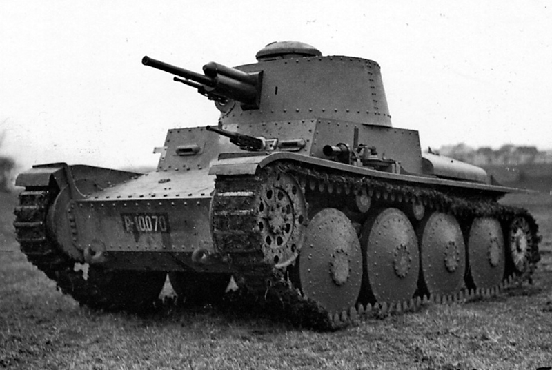

| Spesifikasi | Detail |
|---|---|
| Dimensi (Panjang) | 4,61 m |
| Lebar | 2,16 m |
| Tinggi | 2,40 m |
| Berat | Sekitar 9,8 ton |
| Awak | 4 orang (Komandan, Penembak, Pengisi Peluru, Pengemudi) |
| Lapisan Baja (Depan Badan) | 50 mm (kemudian ditingkatkan) |
| Lapisan Baja (Sisi Badan) | 30 mm |
| Lapisan Baja (Belakang Badan) | 30 mm |
| Lapisan Baja (Depan Kubah) | 50 mm |
| Persenjataan Utama | 1 x meriam 3,7 cm KwK 38 L/47 |
| Persenjataan Sekunder | 2 x senapan mesin 7,92 mm MG 37(t) atau MG 34 |
| Mesin | Praga EPA atau Praga TN 100 |
| Tenaga Mesin | 125 PS (92 kW) |
| Kecepatan Maksimum | 42 km/jam (di jalan) |
| Jarak Tempuh | Sekitar 250 km (di jalan) |
| Suspensi | Pegas daun |
| Produksi | Lebih dari 1.400 unit (sebagai Panzer 38(t)) |